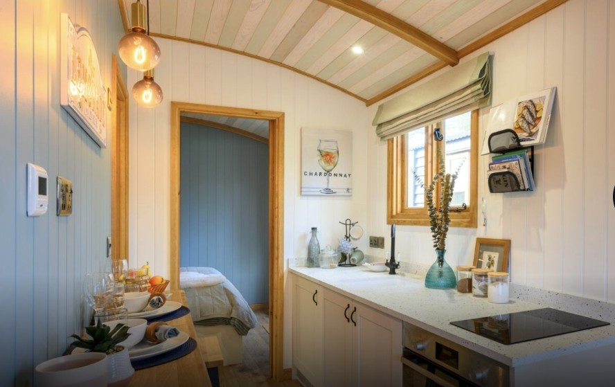

Kitchen Culture & Home Maintenance
Specialist in Kitchens and Complete Home Maintenance
At Kitchen Culture & Home Maintenance, we’re a small, dedicated team with a passion for delivering high-quality home renovations and maintenance services. We pride ourselves on our attention to detail, offering a personal and hands-on approach to every project.
What We Do
We specialize in kitchen installations, working closely with you to create functional and stylish spaces that reflect your needs and taste. Whether it’s custom cabinetry or a complete kitchen refit, we ensure that every detail is carefully crafted to perfection.
Our Experience
- Hotel Maintenance
- Domestic Home Maintenance
- Shepherd’s Hut Construction
Why Choose Us?
- Personalized Service: As a small team, we work directly with you throughout the entire process, ensuring your vision is brought to life with care and attention.
- Experienced and Versatile: With years of experience in carpentry and home renovation, we can handle a wide range of projects with expertise.
- Quality Over Quantity: We focus on delivering exceptional craftsmanship and results, without the complexities or overheads of a large company.
- Reliable and Approachable: We make sure the process is smooth, and we’re always happy to help with whatever you need.
Our Promise
At Kitchen Culture & Home Maintenance, we’re committed to providing high-quality, reliable service, whether it’s a new kitchen, a bathroom update, or general home maintenance. We focus on craftsmanship and customer satisfaction to ensure your home is exactly how you want it.
Get in Touch
With Kitchen Culture & Home Maintenance, you’ll work closely with a team that genuinely cares about your space. Reach out today for a consultation, and let’s begin bringing your home vision to life.